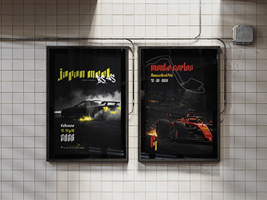
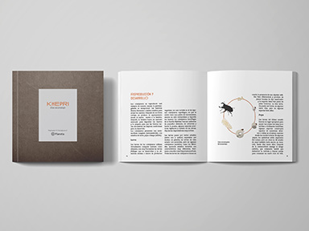
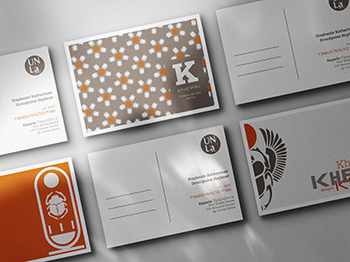
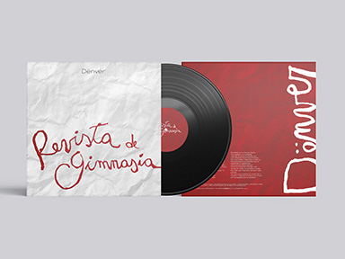

Sobre mí
¡Hola! Soy Stephanie. Estudio Diseño y Comunicación Visual en la UNLa y me apasiona todo lo que rodea al mundo editorial y la producción gráfica. Como ayudante en la materia Tecnología Gráfica, combino la mirada creativa con un fuerte interés por los procesos técnicos de impresión, los soportes y el detalle en la preparación de archivos. Vengo del trabajo en equipo dinámico, por lo que aporto organización, criterio y mucho compromiso a cada proyecto.
Experiencia
Mis proyectos combinan la práctica académica con trabajos independientes, enfocándome siempre en lo que más me apasiona: el diseño editorial, la maquetación y la creación de piezas gráficas visualmente cuidadas. He trabajado en diagramación de publicaciones y piezas digitales para redes.




Habilidades
Mis habilidades incluyen el manejo de software de diseño como Adobe InDesign, Illustrator y Photoshop, así como conocimientos en tipografía, composición y teoría del color. También tengo experiencia en la gestión de proyectos y trabajo en equipo.